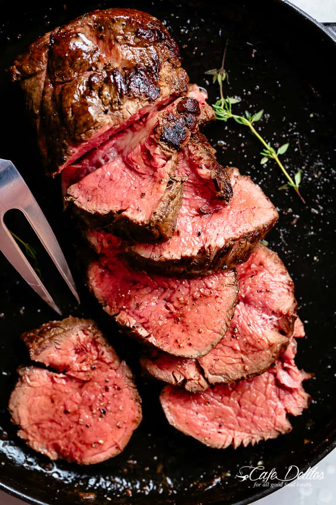

Beef Tenderloin

Description
It’s so easy to roast a juicy beef tenderloin that melts in your mouth with every bite. Even better when served with a rich and rustic, easy to make red wine sauce (or jus).
Ingredients
For the Tenderloin
- 5-6 pounds (2.5-3 kg) beef tenderloin, trimmed
- 3 teaspoons coarse salt
- 1 1/2 teaspoons fresh cracked black pepper
- 2 tablespoons canola or vegetable oil
- 1/2 cup unsalted butter, divided
- 4 large cloves garlic, minced
- 1/2 teaspoon Dijon mustard (optional)
For the Red Wine Sauce
- 2 tablespoons vegetable or canola oil
- 1 onion (or brown shallots) finely chopped
- 1 1/2 cups (375 ml) dry red wine (Merlot or Pinot Noir)
- 2 cups (500 ml) beef stock or broth
- 1 sprig fresh thyme or rosemary
- 1/8 teaspoon ground black pepper
- 1/4 teaspoon salt
Steps
Beef Tenderloin
- Slice tenderloin in half crosswise to create 2 smaller roasts. If roast is untied, fold ends up against the centre/thicker part of each roast and tie with kitchen twine spaced about 1-inch apart. Make sure each halve is even in thickness.
- Chill in the refrigerator, uncovered, for 12 hours (if time allows).
- Let beef stand at room temperature for 1-2 hours before roasting.
- Arrange oven rack to the middle of your oven and preheat to 430°F (220°C).
- Season each beef tenderloin roast all over with salt and pepper. Heat the oil in an oven-proof skillet over medium-high heat until hot.
- Sear roasts on all four sides for about 3 minutes each side (about 12 minutes total), turning with tongs until well browned.
- Combine butter, garlic and Dijon (if using) together in a small bowl while roasts are searing. Set one half of the butter mixture aside to use later for the sauce.
- Slather remaining garlic butter over each roast (about 2 tablespoons each).
- Transfer skillet into the hot oven. (Alternatively: Transfer roast to a lightly greased roasting pan or baking dish.)
- Roast until an instant-read thermometer inserted into the thickest part registers 120-125°F for medium rare (about 20-25 minutes).
*Or cook to your liking:
115-120°F for rare
130-135°F for medium
(Temperature will continue to rise about 5 degrees while the meat rests.)
- Transfer the roast to a carving board and let rest for 15 minutes. Keep the juices in the pan to make the sauce (see below).
- Carve the beef tenderloin into 1/2-inch-thick slices and serve the beef tenderloin with the optional red wine sauce.
Red Wine Sauce
- Skim fat off the remaining juices in the pan (if any).
- Heat oil in the same pan with remaining pan juices over medium-high heat. Sauté onion for about 3 minutes until lightly browned and softened, scraping up any browned bits left from the beef.
- Add thyme/rosemary and season with pepper. Continue cooking for a further minute or so while stirring often.
- Pour in red wine and cook until reduced by half.
- Add in beef stock and bring to a boil. Reduce heat and simmer until reduced by half. Remove the sprig of thyme or rosemary.
- Season with salt to taste and whisk in reserved garlic butter. Pour in any juices left over from the resting steaks just before serving.
- OPTIONAL FOR A SMOOTH AND SILKY SAUCE: strain sauce through a sieve and discard the onion before serving.